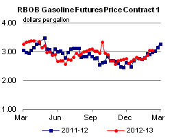

Released: February 13, 2013
Next Release: February 21, 2013
Planned Changes to U.S. Crude Oil Pipeline Infrastructure Should Relieve Cushing Bottleneck
Historically, Cushing, Oklahoma has served as the midcontinent hub for distribution of both crude oil imported to the U.S. Gulf Coast and West Texas crude oil production. Pipelines were constructed and configured to move crude oil north to Cushing, and then on to refineries throughout the Midwest. However, as crude oil production has grown in the U.S. midcontinent and Canada, the Cushing hub has become over-supplied. As a result, market participants increasingly have been looking to relieve bottlenecks at Cushing by reconfiguring and expanding pipeline infrastructure to move crude oil south to the Gulf Coast refineries (Figure 1). Over the next two years, planned additions to pipeline takeaway capacity should be sufficient to ameliorate the current imbalance at the Cushing hub. Part of a supplement to the Energy Information Administration's (EIA) February Short-Term Energy Outlook focuses on this changing infrastructure.
Figure 1. Pipeline infrastructure expansions in the Gulf Coast
Source: U.S. Energy Information Administration.
{kind=link}
Over the last three years, pipeline capacity for delivering crude oil to Cushing has increased by about 815,000 barrels per day (bbl/d). Key to this increase was the construction of the 590,000 bbl/d TransCanada Keystone pipeline that originates in Hardisty, Alberta, Canada. Phase 1 of the Keystone pipeline from Hardisty to Steele City, Nebraska, and on to Patoka, Illinois, was completed in June 2010. Phase 2 of the Keystone pipeline, which extended the pipeline from Steele City to Cushing, was completed in February 2011.
With added flows into Cushing from the north and west, and limited pipeline capacity to move crude from Cushing to Gulf Coast refineries, West Texas Intermediate (WTI) crude oil has traded at a substantial discount to crudes such as Louisiana Light Sweet and Brent. Until mid-2012, only one pipeline delivered crude oil from the Midwest to the Gulf Coast. The 96,000-bbl/d ExxonMobil Pegasus pipeline between Patoka, Illinois and Nederland, Texas, which originally shipped crude oil northward, was reversed in 2006 in order to ship Canadian heavy oil to the Gulf Coast. In May 2012, the 150,000-bbl/d Seaway pipeline, which also shipped crude north to Cushing from the Gulf Coast, was also reversed in order to move crude oil to the higher-priced Gulf Coast market. Seaway capacity was expanded by an additional 250,000 bbl/d in early 2013. Further capacity expansions from Cushing to the Gulf Coast are planned, including a twinning of the Seaway pipeline that is expected online in early 2014, increasing its total capacity to 850,000 bbl/d, and the construction of TransCanada's 700,000-bbl/d Gulf Coast Express project that is expected online in fourth quarter 2013.
In anticipation of the new pipeline take-away capacity from Cushing, 1,225,000 to 1,315,000 bbl/d of new pipeline capacity to deliver crude oil into the Cushing hub is also planned. The largest among these projects is the 600,000 bbl/d Enbridge Flanagan South Project, which would parallel the company's existing Spearhead Pipeline running from Patoka, Illinois to Cushing. Flanagan South is currently scheduled to be online in mid-2014. Another prominent project is Tallgrass' planned Pony Express conversion. The project would convert existing natural gas pipelines into 230,000-320,000 bbl/d of crude oil delivery capability from the Bakken formation and Denver-Julesburg basin to Cushing and nearby refineries in third quarter 2014.
Crude oil produced in the Permian Basin faces the same transportation constraints as Canadian imports and producers in the midcontinent. Two pipelines currently transport crude oil from the Permian Basin to Cushing: the Plains All American Basin pipeline, which was expanded from 400,000 to 450,000 bbl/d in early 2012; and the 175,000 bbl/d Oxy Centurion pipeline. A third pipeline, the Sunoco Logistics West Texas Gulf pipeline, has the capacity to transport 300,000 bbl/d from the Permian Basin to Longview, Texas, where it connects with the Mid-Valley pipeline to Samaria, Michigan. Because the existing pipelines are nearly fully utilized and deliver crude into the over-supplied Cushing hub and Midwest market, six pipeline projects that include pipeline reversals, expansion, and new lines that are either under construction or planned would provide 355,000 bbl/d of new capacity to move crude oil from the Permian Basin directly to the Gulf Coast in 2013, and 478,000 bbl/d of new capacity in 2014.
In sum, over the past three years, 815,000 bbl/d of new pipeline capacity delivering crude oil to Cushing was added. Over the same period, only 400,000 bbl/d of new pipeline take-away capacity was added. During the next two years an additional 1,190,000 bbl/d of pipeline capacity for delivering crude oil from Canada and the midcontinent to Cushing is planned, but this is balanced by 1,150,000 bbl/d of planned pipeline capacity additions to deliver crude oil from Cushing to the Gulf Coast. In addition, about 830,000 bbl/d of new pipeline capacity is planned to move crude oil directly from the Permian Basin to the Gulf Coast, avoiding the congested Midwest. If this capacity is constructed and fully utilized, waterborne imports to the U.S. Gulf Coast, particularly of light sweet crude oil, could drop significantly.
Gasoline price up seven cents, diesel fuel increases eight cents
The U.S. average retail price of regular gasoline increased seven cents to $3.61 per gallon, up nine cents from last year at this time. This is the highest price at this time of year since EIA began collecting retail price data. Prices increased in all regions of the nation for a third consecutive week. The Rocky Mountain and West Coast prices both increased 13 cents, to $3.27 per gallon and $3.87 per gallon, respectively. The Midwest price is now $3.58 per gallon, an increase of seven cents from last week. On the East Coast the price is up six cents to $3.65 per gallon, and the Gulf Coast price is $3.38 per gallon, an increase of a nickel from last week.
The national average diesel fuel price increased eight cents to $4.10 per gallon, 16 cents higher than last year at this time. This is the highest price at this time of year since EIA began collecting retail price data. Prices increased in all regions of the nation for a third consecutive week. The largest increase came in the Rocky Mountain region, where the price increased 12 cents to $3.96 per gallon. The Midwest and West Coast prices both increased a dime, to $4.08 per gallon and $4.27 per gallon, respectively. The East Coast price is $4.15 per gallon and the Gulf Coast price is $4.00 per gallon, both up six cents from last week.
Propane inventories decline
U.S. propane stocks fell 2.5 million barrels to end at 52.4 million barrels last week, 6.0 million barrels (13 percent) higher than a year ago. Gulf Coast inventories dropped by 1.0 million barrels, while Midwest regional inventories declined by 0.9 million barrels. East Coast stocks dropped by 0.4 million barrels, and stocks in the Rocky Mountain/West Coast region declined by 0.1 million barrels. Propylene non-fuel-use inventories represented 5.7 percent of total propane inventories.
Residential heating fuel prices rise
Residential heating oil prices increased during the period ending February 11, 2013. The average residential heating oil price increased by 6 cents to $4.12 per gallon, 9 cents per gallon higher than the same time last year. Wholesale heating oil prices increased by 9 cents to $3.40 per gallon, 14 cents per gallon higher than last year at this time.
The average residential propane price increased by less than a penny to $2.48 per gallon, 38 cents per gallon lower than the same period last year. Wholesale propane prices decreased by 2 cents to nearly $0.97 per gallon for the week ending February 11, 2013, 19 cents per gallon lower than the February 13, 2012 price.
Text from the previous editions of This Week In Petroleum is accessible through a link at the top right-hand corner of this page.
 |
|||||||
 |
|||||||
| Retail Data | Change From Last | Retail Data | Change From Last | ||||
| 02/11/13 | Week | Year | 02/11/13 | Week | Year | ||
| Gasoline | 3.611 | Heating Oil | 4.123 | ||||
| Diesel Fuel | 4.104 | Propane | 2.482 | ||||
|  | |||||||||||||||||||||||||||
|
|||||||||||||||||||||||||||
| *Note: Crude Oil Price in Dollars per Barrel. | |||||||||||||||||||||||||||
| Stocks Data | Change From Last | Stocks Data | Change From Last | ||||
| 02/08/13 | Week | Year | 02/08/13 | Week | Year | ||
| Crude Oil | 372.2 | Distillate | 125.9 | ||||
| Gasoline | 233.2 | Propane | 52.411 | ||||